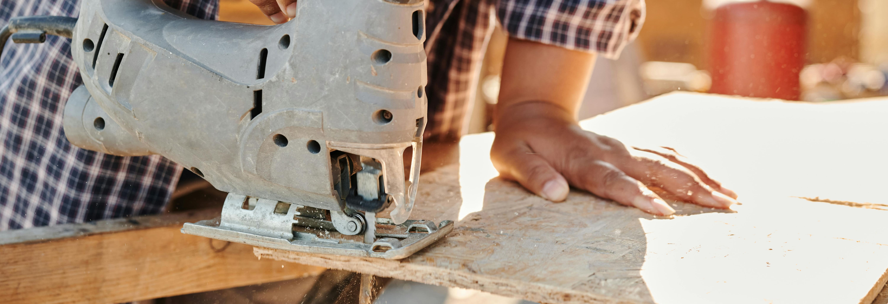
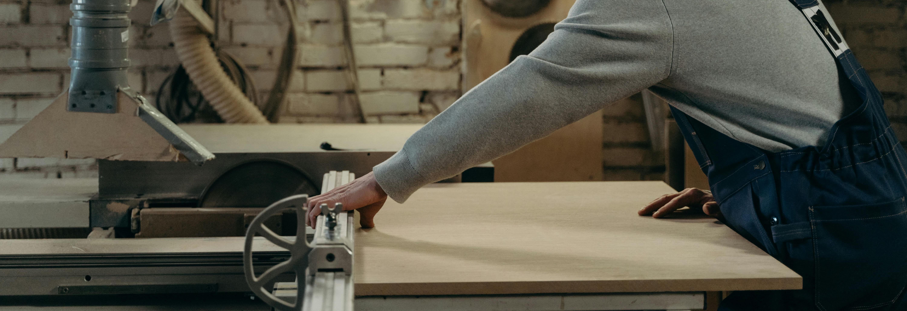
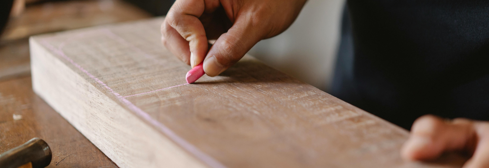

Unsere Auswahl
Eine Schreinerei ist ein Ort, an dem Handwerkskunst und Kreativität aufeinandertreffen. In einer modernen Schreinerei werden zahlreiche hochwertige Materialien verwendet, die sowohl Funktionalität als auch Ästhetik in den Vordergrund stellen. Zu den am häufigsten verwendeten Materialien gehört Massivholz, das durch seine natürliche Schönheit und Langlebigkeit besticht. Eiche, Buche, Ahorn und Walnuss sind nur einige der beliebten Holzarten, die für Möbel, Türen und andere maßgefertigte Stücke verwendet werden.
Neben Massivholz kommen auch Furniere zum Einsatz. Furniere sind dünne Holzblätter, die auf Trägerplatten aufgebracht werden und es ermöglichen, die Optik von teuren Holzarten kostengünstiger zu realisieren. Sie bieten die gleiche ästhetische Wirkung wie Massivholz, sind jedoch leichter und oft stabiler.
Ein weiteres wichtiges Material in der Schreinerei ist Sperrholz. Es besteht aus mehreren Schichten dünner Holzplatten, die kreuzweise miteinander verleimt sind. Sperrholz zeichnet sich durch seine hohe Stabilität und Formbeständigkeit aus und wird oft für den Möbelbau und Innenausbau verwendet.

Auch moderne Werkstoffe wie MDF (Mitteldichte Faserplatte) und HDF (Hochdichte Faserplatte) sind in der Schreinerei nicht mehr wegzudenken. Diese Materialien bieten eine glatte Oberfläche, die sich hervorragend lackieren oder beschichten lässt, und sind ideal für die Herstellung von Schränken, Regalen und anderen Möbelstücken.

Insgesamt ist die Vielfalt der Materialien, die in einer Schreinerei verwendet werden, beeindruckend. Jedes Material bringt seine eigenen Vorteile und Besonderheiten mit, die es den Schreinermeistern ermöglichen, individuelle und hochwertige Werke zu schaffen, die sowohl funktional als auch ästhetisch ansprechend sind.
